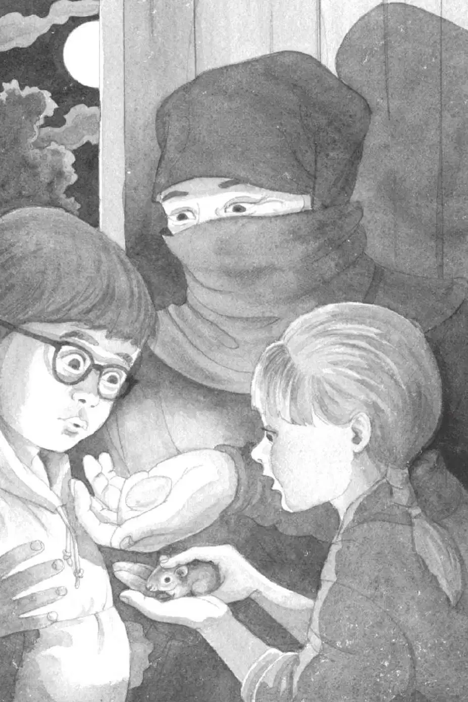

小老鼠跑进小溪对岸那高高的野草丛，消失不见了。
杰克和安妮呆呆地看着那根树枝。
“我们必须走一走试试。”安妮说，“应该跟随自然。”
“算了吧。”杰克说，“树枝太细，一下子就会断成两截的。”
“如果我们假装自己是小老鼠，没准儿就能行。”安妮说。
“哦，拜托，”杰克说，“又来了。”
“你既然能做一块石头，也就能做一只小老鼠。”安妮说，“只要让自己变得很小、很轻、很敏捷。”
杰克深深吸了一口气。
“我们必须这么做。”安妮说。
“好吧。”杰克无奈地说。
“吱吱地叫。”安妮提议道。
“你疯了吗？”杰克说。
“你就这么做吧，”安妮说，“这会让你感到自己就像是一只小老鼠。”
杰克叹了口气，说：“好吧，吱吱。”
“吱吱。”安妮也发出叫声。
“吱吱，吱吱，吱吱。”他们异口同声地叫道。
“我们走吧！快点儿！”安妮说。
杰克把脚踏上了树枝。
“我很小，我很轻，我很敏捷。”他这么想着，然后迅速地冲过了树枝。
杰克的速度太快了，脑子里没有别的念头——只想着赶紧跑到树枝的那一头。
他忘记了汹涌湍急、冰冷刺骨的溪水，忘记了脚下的树枝是那么纤细。
一眨眼间，杰克到了对岸。一眨眼间，安妮来到了他的身边。
他们哈哈大笑，一下子扑倒在草地上。
“看见了吗？看见了吗？树枝没有断！”安妮说。
“哈哈，它还挺粗壮的嘛。”杰克说，“看来，我们得换个角度想问题。”
“像花生米那样想问题。”安妮说。
“没错。”杰克说着脸上露出了微笑。他感觉棒极了。
杰克由于刚才掉进了水里，现在身上还湿淋淋的，但他已经一点儿也不介意了。
杰克把眼镜往上推了推，站起身来。“好了，现在我们要去寻找树屋了。”他说。
“不，不用找了。”安妮说着，指了指上面。
在皎洁的月光下，树屋的轮廓清晰可见。它正高高地挂在树顶上，周围簇拥着白花。
远处传来了说话声，接着，杰克看见了火把。
“那些武士回来了。”杰克说，“我们得赶紧离开。”
“花生米在哪儿？”安妮焦急地说，“我们不能撇下它呀。”
“我们必须走了。”杰克说。
武士的说话声越来越近了，他们的火把也在逐渐逼近。
“快走啊。”杰克说。他一把抓住安妮的胳膊，拖着她向绳梯走去。
“哦，杰克……”安妮难过地说。
“快走！快走！”安妮开始往绳梯上爬。
杰克跟了上来。他心里也很难过。他已经喜欢上那只小老鼠了。非常喜欢。
他们一点点地往上爬。
快要爬到绳梯顶上时，杰克听见了小老鼠的叫声：“吱吱。”
“噢，哇！”安妮喊道，“花生米在树屋里呢！”
安妮双手用力一撑，钻进了树屋。杰克也跟了进来。
他吃惊地吸了口冷气。
树屋里还有别人。
墙角坐着一个黑黑的身影。
“你们做得很好。”那个身影说。
是忍者大师。
“你们遵循了忍者的方式。”他说。
“哦，天哪。”杰克激动地轻叹道。
“吱吱。”
忍者大师手里捧着小老鼠。
“请照顾好你们这位小小的救命恩人。”忍者大师说着把小老鼠递给了安妮。
安妮亲了亲小老鼠的脑袋。
“再把这个拿上……”忍者大师说着把一只手伸向杰克。
他递给杰克一块圆圆的小石头。
“这块月光石能帮助你们找到失踪的朋友。”忍者大师解释道。
杰克出神地望着那块月光石，心想：“这是四样东西中的一样吗？”
“现在你们必须回家了。”忍者大师说着，捡起那本宾夕法尼亚的书，递给了安妮。
“你是在哪里找到的？”杰克问。
“就在这里，”忍者大师说，“你们之前没有看见，是因为你们有一项使命还没完成。”
“那你呢？”安妮问，“你跟我们一起走吗？”
“是啊，”杰克说，“我们找仙女摩根的时候还需要你的帮助呢。”

忍者大师微微地笑道：“不，我的朋友，我必须留在这儿。你们一路上会得到更多其他人的帮助，但是你们必须靠自己找到要走的路。”
安妮把书打开，找到了那幅蛙溪的图片。
她用手指着图片，说：“请带我们回家！”
起风了。
满树的白花开始摇晃，云团遮住了月亮。
“记住，”忍者大师说道，“保持一颗善良的心。”
然后，他悄无声息地顺着绳梯下去了，消失在漆黑的夜里。
“等一等！”杰克喊道。他有那么多的问题要问忍者大师。关于自然，关于忍者，关于他们的使命。
可是树屋已经开始旋转。
它越转越快。
杰克牢牢攥住手里的石头，把眼睛闭得紧紧的。
然后，一切都静止了。
完完全全地静止不动了。